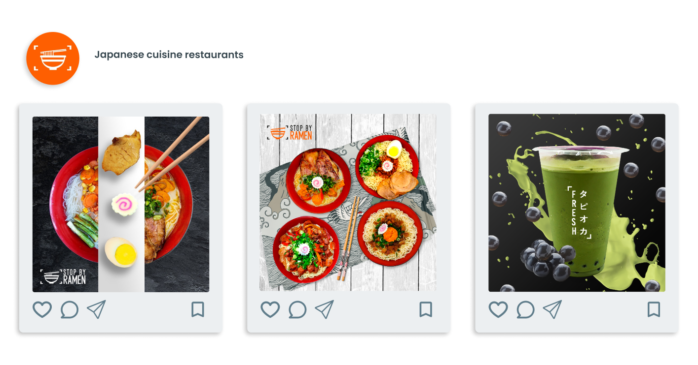

Kim Zacarias
Sobre mí
Diseñadora UX | Freelancer | UI 🎨 | UX research🔍| UX writing✒️| Figma💻
DATOS PERSONALES
- Nombre completo: Kimberley Zacarias
- Fecha de nacimiento: 28/05/19994
- Lugar de nacimiento: Puebla, Puebla, México
FORMACIÓN ACADÉMICA
- 2012-2016:
- Universidad misteriosa
- Licenciatura en Animación y Arte digital
- 2017-2021:
- Universidad super misteriosa
- Maestría en Diseño
EXPERIENCIA LABORAL
- 2016-2020:
- Freelance
- Con clientes de CDMX
- 2021-2023:
- Diseñadora UX/UI
- He trabajado en agencias de diseño y marketing.
- 2023:
- Aprendiz de CTD en Digital House
- En proceso de convertirme en una certified tech developer.
Conoce mi trabajo
Adelante, ver no cuesta nada.
